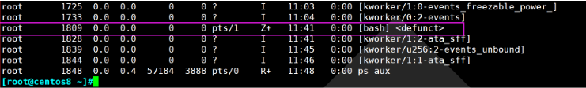
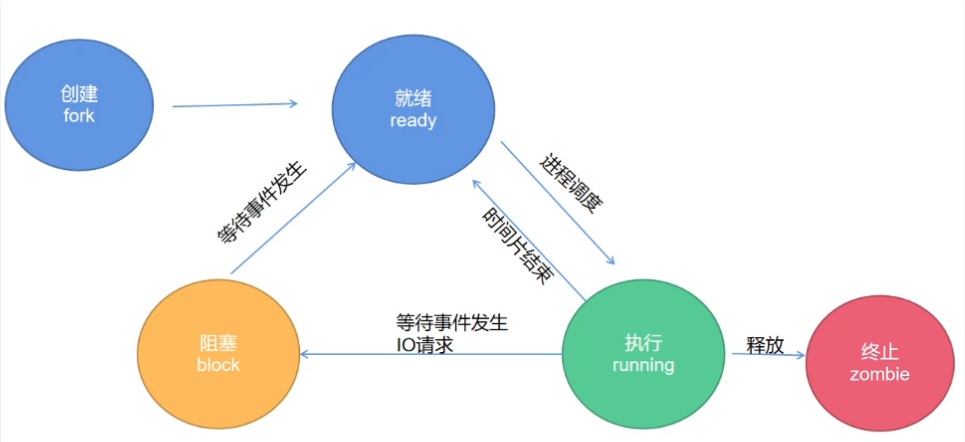
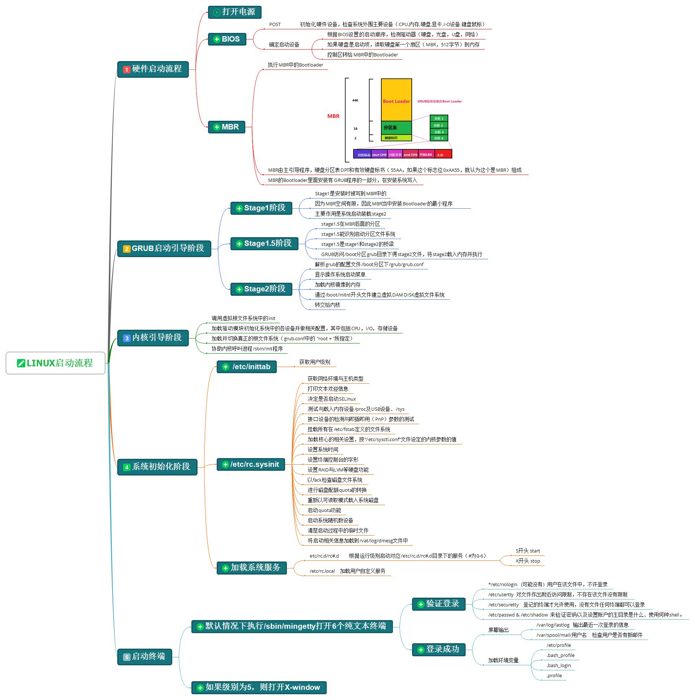

第四周作业
1. 自定义写出10个定时任务的示例：
使用周期性计划任务crond来完成定时任务，在linux中crond服务是一个用于调度和执行定时任务的后台服务。它使用cron表达式来表示定时任务的执行时间。cron表达式由5个或6个字段组成，每个字段代表不同的时间单位。这些字段的含义如下：
- 分钟（Minute）：取值范围为0-59。
- 小时（Hour）：取值范围为0-23。
- 日期（Day of the Month）：取值范围为1-31。
- 月份（Month）：取值范围为1-12或使用英文缩写（Jan-Dec）。
- 星期（Day of the Week）：取值范围为0-7或使用英文缩写（Sun-Sat）。注意：0和7都表示周日。
1 | |
cron表达式还可以包含第六个字段，用于指定要运行的用户。
一个典型的cron表达式的格式如下：
1 | |
每个星号（*）代表一个字段，表示“任意值”。因此，一个cron表达式可以用来描述定时任务的执行时间。
例如：
* * * * * command：每分钟都运行一次。0 * * * * command：每小时的第0分钟运行一次。0 0 * * * command：每天的0点0分运行一次。0 0 * * 1 command：每周一的0点0分运行一次。0 0 1 * * command：每月1日的0点0分运行一次。
使用crontab命令可以编辑和管理用户的定时任务。常用的crontab命令选项包括：
crontab -e：编辑当前用户的定时任务。crontab -l：列出当前用户的定时任务。crontab -r：删除当前用户的定时任务。
例如，要编辑当前用户的定时任务，可以运行：
1 | |
然后，编辑crontab文件，按照上述格式添加定时任务，并保存文件即可。
以下为10个定时任务的示例：
更新系统包和安全补丁：
- 配置过程：编辑root用户的定时任务表
1
sudo crontab -e - 添加定时任务：
1
0 3 * * * apt-get update && apt-get upgrade -y
- 配置过程：编辑root用户的定时任务表
清理临时文件和日志：
- 脚本：使用Bash脚本清理指定目录的临时文件和过期日志。
- 脚本文件：clean_temp_logs.sh
1
2
3#!/bin/bash
find /tmp -type f -mtime +7 -delete
find /var/log -type f -mtime +30 -delete - 配置过程：编辑root用户的定时任务表
1
sudo crontab -e - 添加定时任务：
1
30 3 * * * /path/to/clean_temp_logs.sh
备份重要数据：
- 脚本：使用rsync命令备份重要数据到远程服务器。
- 脚本文件：backup_data.sh
1
2#!/bin/bash
rsync -avz /path/to/source/ user@remote_server:/path/to/backup/ - 配置过程：编辑root用户的定时任务表
1
sudo crontab -e - 添加定时任务：
1
0 2 * * * /path/to/backup_data.sh
监控系统资源使用情况：
- 脚本：使用sar或vmstat等工具记录系统资源使用情况。
- 配置过程：编辑root用户的定时任务表
1
sudo crontab -e - 添加定时任务：
1
* * * * * /usr/bin/sar -q >> /var/log/sar.log
监控磁盘空间：
- 脚本：使用df命令记录磁盘空间使用情况。
- 配置过程：编辑root用户的定时任务表
1
sudo crontab -e - 添加定时任务：
1
0 4 * * * /bin/df -h >> /var/log/disk_space.log
备份数据库：
- 脚本：使用数据库备份工具，如mysqldump，备份数据库到指定目录。
- 配置过程：编辑root用户的定时任务表
1
sudo crontab -e - 添加定时任务：
1
30 2 * * * /path/to/mysqldump -u DB_USER -pDB_PASSWORD DB_NAME > /path/to/backup/db_backup_$(date +\%Y\%m\%d).sql
监控网络连接：
- 脚本：使用netstat或ss等工具记录当前网络连接情况。
- 配置过程：编辑root用户的定时任务表
1
sudo crontab -e - 添加定时任务：
1
* * * * * /bin/netstat -nat >> /var/log/network_connections.log
检查日志文件：
- 脚本：使用grep或awk等工具检查关键字是否出现在日志文件中。
- 配置过程：编辑root用户的定时任务表
1
sudo crontab -e - 添加定时任务：
1
0 3 * * * grep "ERROR" /var/log/application.log >> /var/log/error.log
监控进程状态：
- 脚本：使用ps命令检查关键进程的状态。
- 配置过程：编辑root用户的定时任务表
1
sudo crontab -e - 添加定时任务：
1
* * * * * /bin/ps aux | grep "my_process" >> /var/log/process_status.log
定期重启服务：
- 脚本：使用systemctl或service命令重启指定服务。
- 配置过程：编辑root用户的定时任务表
1
sudo crontab -e - 添加定时任务：
1
0 4 * * * /bin/systemctl restart my_service
2. 图文并茂说明Linux进程和内存概念：
1. 进程
- 进程是计算机中正在执行的程序的实例。每个进程都有独立的虚拟内存空间，包含代码、数据和堆栈段。进程之间相互隔离，通过操作系统调度进行并发执行。每个进程有唯一的进程标识符（PID）来标识自己。
2. 进程状态
- 创建状态（Creation State）：进程在创建时需要申请一个空白的PCB（进程控制块），填写控制和管理进程的信息，完成资源分配。如果创建工作无法完成（例如资源不足），进程处于创建状态，无法被调度运行。
- 就绪状态（Ready State）：进程已准备好，已分配到所需资源，只要分配到CPU就能够立即运行。
- 执行状态（Running State）：进程处于就绪状态被调度后，进入执行状态，正在使用CPU执行指令。
- 阻塞状态（Blocked State）：正在执行的进程由于某些事件（例如I/O请求、申请缓存区失败）而暂时无法运行，进程被阻塞。在满足请求时进入就绪状态等待系统调度。
- 终止状态（Termination State）：进程结束，或出现错误，或被系统终止，进入终止状态，无法再执行。
- 僵死状态态（zombie）：僵尸态，结束进程，父进程结束前，子进程不关闭，杀死父进程可以关闭僵死
态的子进程

1 | |
3. 状态之间的转换

- 运行态（Running State） -> 就绪态（Ready State）：进程占用CPU的时间过长，或者有更高优先级的进程需要运行时，当前进程被迫让出CPU，进入就绪状态。
- 就绪态（Ready State） -> 运行态（Running State）：运行的进程的时间片用完，调度选择合适的进程分配CPU。
- 运行态（Running State） -> 阻塞态（Blocked State）：正在执行的进程因发生某等待事件而无法执行，例如发生了I/O请求。
- 阻塞态（Blocked State） -> 就绪态（Ready State）：进程所等待的事件已经发生，进程进入就绪队列。
4. Linux内存管理 Linux的内存管理涉及以下几个概念：
- 物理内存：计算机实际的硬件内存。
- 虚拟内存：每个进程看到的独立内存空间，包括代码、数据、堆、栈等。
- 页（Page）：虚拟内存和物理内存之间的固定大小的内存块。
- 页面置换：将虚拟内存中的某些页从RAM（物理内存）移出到磁盘，以便为其他需要的页腾出空间。
5. 进程优先级
Linux中的进程优先级用Nice值来表示，取值范围一般是-20（最高优先级）到+19（最低优先级）。Nice值越低，优先级越高。进程可以通过调整Nice值来影响CPU调度，但需要足够的权限来修改。
6. 进程分类
- 前台进程：在终端直接运行的进程，通常会占用终端的输入输出。
- 后台进程：在终端后加上
&运行的进程，它不会占用终端的输入输出。 - 守护进程（Daemon）：在后台运行的特殊进程，通常用于在系统启动时运行，没有终端交互。
7. 进程父子关系 在Linux中，进程的创建和管理通常遵循父子关系。当一个进程（父进程）创建另一个进程（子进程）时，子进程将继承一些父进程的属性。父进程可以通过PID跟踪和管理子进程，并在需要时等待子进程结束。这种关系可以形成进程树，其中父进程是根，子进程是树干和树枝。
3. 图文并茂说明Linux启动流程：

Linux的启动流程经过多个阶段，包括BIOS/UEFI、Bootloader、内核加载和初始化、系统服务启动等步骤。
BIOS/UEFI：
- 计算机通电后首先执行BIOS或UEFI固件。这个固件执行硬件自检（POST）并初始化硬件设备。
- 然后从可引导设备中加载Bootloader。
Bootloader：
- Bootloader负责加载Linux内核。最常见的Bootloader是GRUB（GRand Unified Bootloader）。
- GRUB允许用户选择不同的内核版本和操作系统进行启动。
- Bootloader加载内核映像文件并将控制权交给内核。
Linux内核加载和初始化：
- 内核被加载到内存中并解压缩。
- 初始化内核数据结构、设置中断处理、初始化设备驱动等。
用户空间初始化：
- 内核启动后，它会执行用户空间的初始化程序
/sbin/init或者其他指定的程序。 - 通常，现代系统使用systemd作为init进程。
- 内核启动后，它会执行用户空间的初始化程序
系统服务启动：
- systemd根据配置文件启动各种系统服务和守护进程。
- 完成初始化后，系统进入多用户状态，可以开始用户登录和应用程序的运行。
4. 自定义一个systemd服务定时去其他服务器上检查/tmp/下文件的个数，如果发现数量有变化就记录变化情况到文件中。
要在Linux中创建一个自定义的systemd服务，定期检查远程服务器上的文件数量，并记录变化情况到文件中，可以按照以下步骤进行操作：
- 编写脚本：首先，创建一个脚本，用于检查文件数量并记录变化情况。在本例中，我们将创建一个Bash脚本，保存为
check_files.sh，并放置在合适的位置，比如/usr/local/bin/。
1 | |
- 给脚本添加执行权限：
1 | |
- 创建systemd服务单元：现在，我们将创建一个systemd服务单元来运行我们的脚本。
在/etc/systemd/system/目录下，创建一个名为check-files.service的文件：
1 | |
- 重新加载systemd并启动服务：
1 | |
- 设置定时运行：为了定期运行该服务，我们将使用systemd的定时器功能。在
/etc/systemd/system/目录下，创建一个名为check-files.timer的文件：
1 | |
上述配置将每隔5分钟运行一次我们的检查服务。
- 启动定时器并启用自启动：
1 | |
现在，您的自定义systemd服务已经配置完成。它会定期检查远程服务器上/tmp/目录下文件的数量，并记录变化情况到/var/log/file_count.log文件中。
5. 写Linux内核编译安装博客：
Linux内核编译安装的详细过程
下载Linux内核
首先，您可以从官网或第三方网站下载Linux内核源代码。官网网址为：https://www.kernel.org/，或者您也可以使用更快的下载地址：http://ftp.sjtu.edu.cn/sites/ftp.kernel.org/pub/linux/kernel/。从适合您需求的版本中下载压缩包，例如“linux-5.19.tar.gz”[[1](https://blog.csdn.net/qq_45041871/article/details/127335586)]。解压Linux内核
使用以下命令解压下载的Linux内核压缩包：1
tar -zxvf linux-5.19.tar.gz选择参考配置文件
为了后续的配置工作，您可以选择一个参考配置文件。使用以下命令将配置文件复制到当前目录（假设这里的参考配置文件是/boot/config-5.15.0-46-generic）：1
cp /boot/config-5.15.0-46-generic .config安装必要依赖
在使用make命令编译之前，需要安装一些必要的依赖库。根据您的Linux发行版执行以下命令安装所需依赖：1
2
3
4
5
6
7
8sudo apt-get update
sudo apt install make
sudo apt-get install gcc
sudo apt-get install libncurses5-dev
sudo apt-get install flex
sudo apt-get install bison
sudo apt-get install libelf-dev
sudo apt-get install libgelf-dev配置内核
使用命令make menuconfig可以打开一个可视化终端，让您根据需要对内核参数进行设置。如果不需要更改任何参数，则可以直接保存并退出。编译内核
使用以下命令编译Linux内核.大约需要数小时。1
make bzImage安装内核映像和模块
编译完成后，可以将内核映像和模块安装到系统中。执行以下命令安装：1
2make modules_install
make install更新引导加载器
编译安装完成后，您需要更新引导加载器以使用新编译的内核。这一步可能因系统和引导加载器的不同而有所差异。例如，使用GRUB引导加载器的情况下，可以使用update-grub命令更新引导配置。
6. 总结5个自我觉得比较有用的awk的使用场景，比如在什么情况下用awk处理文本效率最高，发散题，至少写1个。
1 | |
我们可以使用Awk来处理这个CSV文件，比如按条件筛选、计算年龄总和等：
- 统计年龄总和：
1 | |
- 按条件筛选：
1 | |
- 添加新的列：
1 | |
awk非常适合在命令行下处理文本数据，特别是当需要快速处理结构化的文本数据时，它的效率很高。它简洁的语法和强大的文本处理能力使得它成为文本处理的首选工具之一。
本博客所有文章除特别声明外，均采用 CC BY-SA 4.0 协议 ，转载请注明出处！